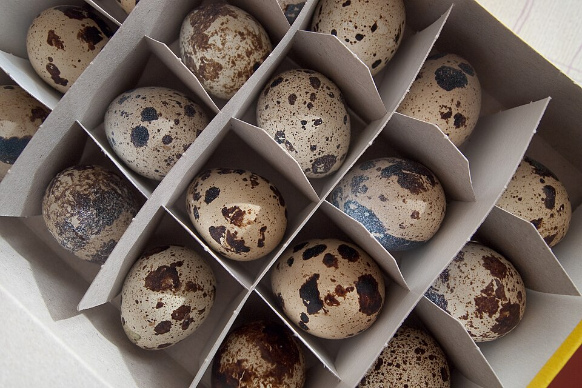
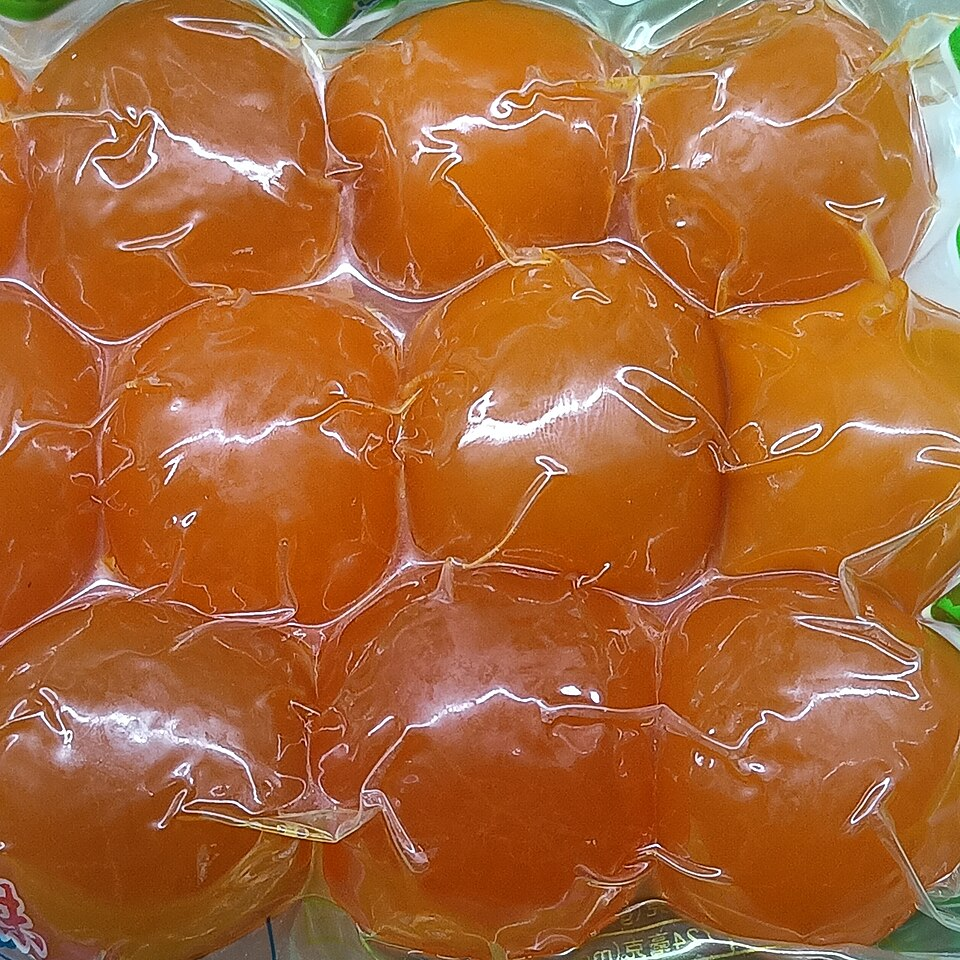
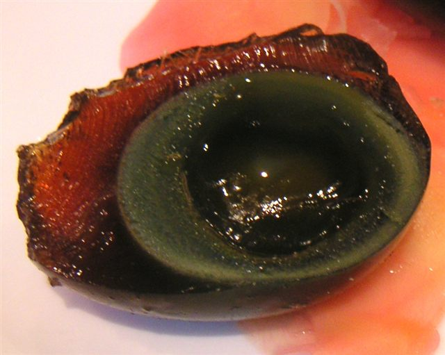
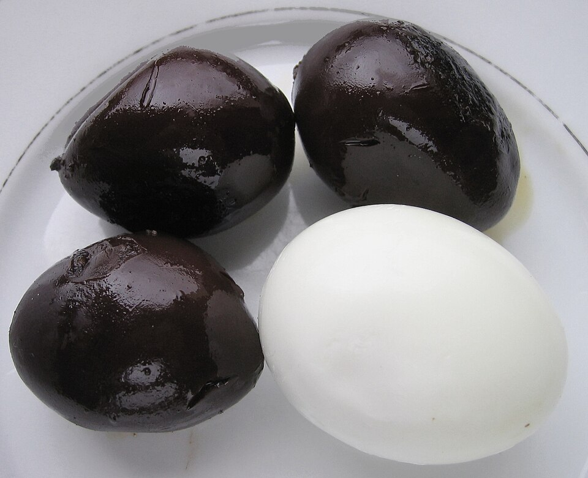

跟爸爸媽媽去買蛋
雞蛋去哪裡買？
超市、市場、有機商店都買得到
不同的地方，賣的蛋也不太一樣。這一頁還有鴨蛋、鵪鶉蛋、皮蛋這些其他的蛋喔！

買蛋的地方
超市、全聯
賣洗乾淨的蛋，放在冷冷的冰櫃裡。蛋殼上常常印著字母，看看是哪一個！
 傳統市場
傳統市場
有一籃一籃的蛋，比較便宜。很多蛋沒有洗過，買回家要馬上放冰箱。
 有機商店、網路
有機商店、網路
賣有機蛋。雞媽媽住在有院子的家，吃有機的食物。比較貴一點。
蛋殼上的字母是什麼意思？去看飼養方式。
不只雞蛋
其他的蛋
除了雞蛋，我們還會吃這些蛋。你吃過幾種呢？
 鴨蛋
鴨蛋
鴨媽媽生的蛋，比雞蛋大，蛋黃也比較大。常被做成鹹蛋和皮蛋。
市場、超市
鵪鶉蛋小小一顆，蛋殼有咖啡色的點點。常常煮熟放在滷味或關東煮裡。
市場、超市
鹹蛋用鹽醃過的鴨蛋，蛋黃橘橘的、油油的，吃起來鹹鹹的。
市場、超市
皮蛋蛋白變成咖啡色、透明的，像果凍一樣！常拌豆腐一起吃。
市場、超市 茶葉蛋
茶葉蛋
用茶葉和醬油煮的蛋，蛋殼上有好看的裂紋花紋。
便利商店
鐵蛋滷了又吹乾、滷了又吹乾，變得黑黑的、QQ 的。是淡水有名的點心。
超市、伴手禮店買包裝好的蛋，請大人看看盒子上有沒有寫日期和做的工廠，沒有寫的不要買喔。
照片來源（Wikimedia Commons，已縮小尺寸）：
- 鴨蛋：Duck Eggs Green Background，Whitlox，CC0
- 鵪鶉蛋：Quail eggs, Rostov-on-Don, Russia，Vyacheslav Argenberg，CC BY 4.0
- 鹹蛋：Salted duck egg yolk，Fumikas Sagisavas，CC0
- 皮蛋：Century egg，Laughlin Elkind，CC BY 2.0
- 茶葉蛋：Tea eggs 1，Daniela Eftimova，CC BY-SA 4.0
- 鐵蛋：Iron Eggs clone compared to a 5 minutes cooked and peeled chicken egg，Hans Haase，CC BY-SA 4.0


給爸爸媽媽看（店家、牧場和詳細資料）
四種雞蛋去哪裡買
| 種類 | 哪裡買 | 價格 | 怎麼認 |
|---|---|---|---|
| 一般洗選蛋 | 超市、量販店、生鮮超市 | 便宜到中等 | 蛋殼有噴印，字母多半是 C 或 E |
| 動物福利蛋 | 全聯「動物福利蛋」專區、有機店、百貨超市 | 中等到偏高 | 人道或友善畜產標章；字母 E、B、F |
| 有機蛋 | 有機連鎖店、百貨超市、牧場網購宅配 | 最貴 | 有機標章和驗證字號；字母 O |
| 散裝蛋 | 傳統市場、雜貨店 | 最便宜 | 沒有逐顆噴印，只有外箱標籤 |
動物福利蛋：全聯動福蛋專區
全聯從 2015 年起陸續推動小農直採等專區，並逐步導入動物福利蛋。合作牧場都要通過人道飼養或友善畜產等第三方認證。各門市實際上架的品牌可能不同。動物福利蛋不等於有機蛋。
| 牧場 | 地區 | 全聯網站上的介紹 |
|---|---|---|
| 廣南牧場 | 台南 | 母雞在明亮乾淨的環境中生活 |
| 日安畜牧場 | 台南 | 密閉式負壓水濂雞舍，墊料可讓雞沙浴、抓耙 |
| 富祺畜牧場（大成散步雞紅蛋） | 嘉義 | 人道標章與友善畜產雙標章；平飼，每平方公尺不超過 9 隻 |
| 大武山蛋雞畜牧場第二分場 | 屏東 | 位在屏東大武山腳下，2007 年創立 |
| 大林畜牧場 | 嘉義 | 以動物福利蛋為重點經營 |
| 順利畜牧場（勤億蛋品） | 嘉義 | 強調善待母雞 |
有機蛋牧場
確認方式：蛋殼噴印第二行字母為 O，包裝上有有機農產品標章和驗證字號。
亞植有機農場
2012 年通過中央畜產會有機驗證，自稱全台最大有機放牧雞蛋農場，產品「鮮有蛋」。
- 門市
- 桃園市楊梅區民有路二段 588 號
- 官網
- emtaiwan.com.tw，可網購宅配
- 價格參考
- 40 顆 1,200 元（萬家福網購）；每盒 10 顆約 140 元（聖德科斯網購）
甜心畜牧場
飼養台灣本土土雞，有機放牧，不關籠也不剪喙。
- 地點
- 台南市歸仁區
- 官網
- sweetiefarm.tw
- 宅配專線
- 06-3032355
- 驗證字號
- 1-002-000004
- 價格參考
- 40 顆 1,200 元；60 顆 1,800 元（冷藏宅配）
台中市可以買到有機蛋的店家
名單來自亞植有機農場公布的銷售據點，地址和電話來自各家官網或 Google 地圖。各店不一定隨時有貨，出門前最好先打電話問。
| 店家 | 區 | 地址 | 電話 |
|---|---|---|---|
| 聖德科斯 墩隆門市 | 西屯區 | 大墩路 958 號 | (04)2327-4346 |
| 聖德科斯 台中上安 | 西屯區 | 黎明路三段 81 號 | (04)2369-3769 |
| 聖德科斯 海德堡門市 | 南屯區 | 向心南路 969 號 1 樓 | (04)2369-0206 |
| 聖德科斯 台中三民 | 中區 | 三民路二段 1 號 1 樓 | (04)2369-3606 |
| 聖德科斯 台中崇德 | 北區 | 崇德路一段 647 號 1 樓 | (04)2238-0306 |
| 聖德科斯 台中新松竹 | 北屯區 | 松竹路二段 230 號 1 樓 | 官網未列 |
| 聖德科斯 太平新興 | 太平區 | 新興路 1 號 | (04)2369-0208 |
| 聖德科斯 豐原門市 | 豐原區 | 圓環東路 693 號 1 樓 | (04)2524-0911 |
| 棉花田 台中豐樂門市 | 南屯區 | 向心南路 939 號 | 04-2389-7325 |
| 棉花田 台中河南門市 | 南屯區 | 三義里一帶（請電話確認） | 04-2258-5297 |
| 棉花田 台中大墩門市 | 西屯區 | 何南里一帶，有移店公告（請電話確認） | 04-2310-0779 |
| c!ty'super 台中店 | 西屯區 | 台灣大道三段 251 號 B2（台中大遠百） | |
| 苗霖行 | 南屯區 | 大墩五街 146 號 1 樓 |
聖德科斯營業時間大多是 09:00～20:00。海德堡門市和棉花田豐樂門市都在向心南路上，可以一次跑兩家。
其他縣市的有機蛋通路
| 類型 | 店家 | 有門市的地區 |
|---|---|---|
| 有機連鎖店 | 棉花田生機 | 台北、新北、基隆、宜蘭、桃園、新竹、台中 |
| 聖德科斯 | 台北、新北、宜蘭、桃園、新竹、台中、嘉義、台南、高雄、屏東、花蓮 | |
| 統一生機 | 桃園、竹北 | |
| 有機緣地 | 台北 | |
| 百貨超市 | c!ty'super | 台北、板橋、新竹、竹北、台中 |
| Mia C'bon | 台北、新北、桃園、新竹 | |
| 新光三越、SOGO 忠孝店 | 台北 | |
| 生鮮店、肉舖 | 安永鮮物 | 台北、新北、新竹 |
| 法蘭克肉舖、心樸市集 | 台北、新北 |
完整清單：亞植有機農場全國銷售據點（亞植說明「僅供參考」）。
在傳統市場買散裝蛋
- 散裝蛋不是不能吃，但蛋殼可能沾有雞糞、看不出是哪天的蛋，攤位也常在常溫下，夏天更明顯。
- 挑蛋殼乾淨、沒有裂縫的；買回家馬上冷藏、盡快吃完；要煮之前再洗，摸過生蛋要洗手。
- 做沙拉、三明治、蛋黃醬這類不再加熱的食物，最好用洗選蛋。
其他的蛋：數字
- 鴨蛋：2025 年產量約 4.0 億顆；蛋鴨約 193 萬隻，主要在屏東（約 44%）和彰化（約 39%）。
- 鵪鶉蛋：2025 年產量約 4.6 億顆；蛋鵪鶉約 194 萬隻，將近一半在彰化。
- 加工蛋請注意包裝上的品名、成分、製造日期、有效日期和廠商資料。
資料整理於 2026 年 11 月。來源：全聯動物福利蛋專區、亞植有機農場全國銷售據點、甜心畜牧場官網、聖德科斯官網門市據點、Google 地圖、中央社 2026 年 9 月 13 日報導、農業部〈114 年畜牧生產〉表 1 與表 3。本站和這些店家沒有合作關係，店家資訊可能變動，請以店家公告為準。
繼續探險